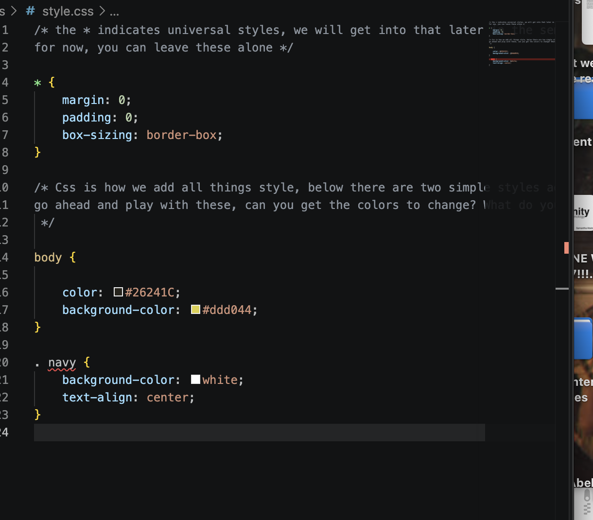
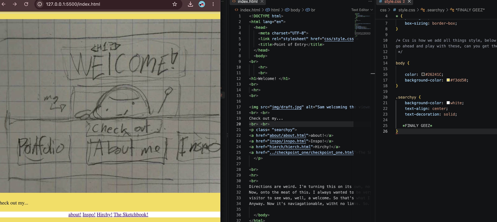

Interactive Sketchbook
What a doozy this one is! How about...
about!
Hirchy!
Inspo!
CSS Practice!
Lets go home!
Sept 11, 2026
I pray I got these instructions right, but whatever.
Have this one. Again. Look a gif. I wanted to add a gif oringally, but the "digital portrait" called for a video.
So here. Am I supposed to reflect here?
I feel like I'm supposed to.

Amazing. Here's also the draft thing from earlier... that's also on the main page.
Anyway, Copy and paste is REALLY a man's best friend, and it indeed does save one's behind. Links were a bit tedious, but with a bit of trial and error,
I think I got it down just fine. One you get it right, it's smooth sailing from there. Finally connecting everything via links was really rewarding upon completion.
If you noticed with naviagting, for once, the navigations thing is now at the top for this page.
I figured because my page is a strong growing child, I would put it on top so it wouldn't get lost.
I had a moment where I just clicked through everything. Lovely. Can't wait to decorate everything up. Actually nice buttons would be quite nice. At least I hope I get the chance to.
Also I'm gonna connect this to the homepage.
Sept 23, 2026
I can't tell if I hate CSS, or I just need more time. Probably the latter. Now, I did a bit more than
just the navigation (ex. turning the) background universally yellow. Just really wanted to do that. I liked the
idea of the navigaiton being white because of it. It's light, contrasts, and just looks nice. I'll make them buttons eventually.
Probably during revision!
Lots of copy and pasting for uniformity. I just wanted it to look nice. I think it made it a bit more nice.
I think that simple sprucing definetely changed the experience, making it feel more... nice? Welcoming?
Kind of like walking into a friend's house and seeing it clean. You know?
I connected the main CSS to everything. Seemed to work! Anyway, I'm gonna lie down. Check out my failures and successes.

